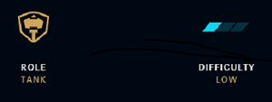

Tier list des meilleurs champions Jungle du jeu
Qu'est ce que la jungle ?
La jungle est un lieu mystique et obscure repoussant les plus faibles d'entre vous ! Seul les
forts et les téméraires osent s'y aventurer, des monstres, des champions adversent et
des créatures mythiques y rôdent. Le maître des lieux, le jungler est celui qui y passe
le plus de temps, il tue sans relâche les démons qui y habitent pour gagner en
expérience et récupérer le butin volé aux défunts aventuriers. Son rôle, vis à vis de
son équipe, est de les "gank" ce qui signifie en ancien Russo-Marocain "fumer
l'adversaire de son allié pour lui permettre de mieux respirer sur sa lane".
Quels sont les 3 grands principes d'un jungler ?
Attentif : le jungler doit en permanence observer les lanes tout en gardant un oeil sur sa
propre situation. Il doit savoir quels alliés sont en difficulté pour aller les aider et
quels objectifs sont disponibles. Il essaiera toujours d'avoir le Baron Nashor et le
Dragon visibles au cas où l'équipe ennemie tente de les faire discrètement.
Autonome : le jungler est le plus disposé à prendre l'initiative d'un gank ou d'un objectif.
Il doit diriger ses alliés vers le Dragon ou le Nashor lorsqu'il estime qu'il est
possible de les tuer. Si les lanes se contentent souvent de farmer et tuer leur
opposant, le jungler doit farmer*, gank*, surveiller le jungler adverse et les
objectifs. Le chemin d'un jungler change à chaque partie et dépend surtout des actions
sur les lanes.
Silencieux : un jungler doit surprendre ses ennemis lorsqu'il vient gank une lane. Pour
cela, il se doit d'être le plus discret possible durant le début de la partie. Les
adversaires doivent toujours se méfier de la position du jungler, sans quoi, ils
n'hésiteront pas à attaquer vos alliés. N'oubliez jamais qu'un jungler visible au loin
n'est plus une menace.
Warwick le loup Marocain

Warwick est un monstre qui chasse dans les rues grisâtres de Zaun. Transformé par des
expériences horribles, son corps est désormais muni d'un système intriqué de chambres et
de pompes qui injecte une rage alchimique dans ses veines. Surgissant des ombres, il
traque les criminels qui terrorisent les profondeurs de la ville. Warwick est attiré par
le sang, dont l'odeur le rend fou. Si sa proie saigne, elle n'a aucune chance de lui
échapper.
Amumu la momie Marocaine

La légende veut qu'Amumu soit une âme solitaire et mélancolique de la Shurima antique et
qu'il parcoure le monde à la recherche d'un ami. Condamné par une malédiction à rester
seul à jamais, il provoque la mort et la ruine à chaque geste d'affection. Ceux qui
prétendent l'avoir vu le décrivent comme un cadavre vivant, petit de taille, enveloppé
dans d'effrayants bandages. Il a inspiré bien des mythes, des chansons et des légendes,
transmis de génération en génération pendant si longtemps qu'il est désormais impossible
de démêler le vrai du faux.

Hécarim le pur sang arabe (Marocain)

Fusion spectrale de l'homme et de la bête, Hecarim est condamné à pourchasser les âmes des
vivants pour l'éternité. Lorsque les ombres ont envahi les Îles bénies, ce fier
chevalier et sa horde de cavaliers ont été anéantis par les énergies destructrices de la
Ruine. À présent, quand la Brume noire s'étend sur Runeterra, il mène la charge et se
plaît à massacrer et écraser ses ennemis sous ses lourds sabots.

Kayn l'assassin Marocain

Expert inégalé dans la pratique de la magie des ombres, Shieda Kayn combat pour accomplir sa
véritable destinée : mener un jour l'Ordre de l'ombre vers une ère nouvelle où Ionia
régnera en maître. Il manie Rhaast, une arme darkin douée de raison, sans jamais
craindre la corruption de son corps et de son esprit. Il ne peut y avoir pour lui que
deux fins possibles : soit Kayn pliera l'arme à sa volonté, soit la faux maléfique le
consumera complètement, ouvrant la voie à la destruction de tout Runeterra.
Elise l'araignée Marocaine

Elise est un prédateur mortel qui vit dans un palais reclus et obscur, au plus profond de la
plus vieille ville de Noxus. C'était autrefois une simple femme, maîtresse d'une Maison
toute-puissante, mais la morsure d'un maléfique demi-dieu la transforma en un être aussi
magnifique qu'inhumain : une créature arachnéenne qui tisse sa toile pour piéger ses
proies. Pour maintenir sa jeunesse éternelle, Elise se repaît des innocents et peu sont
ceux qui peuvent résister à sa séduction.